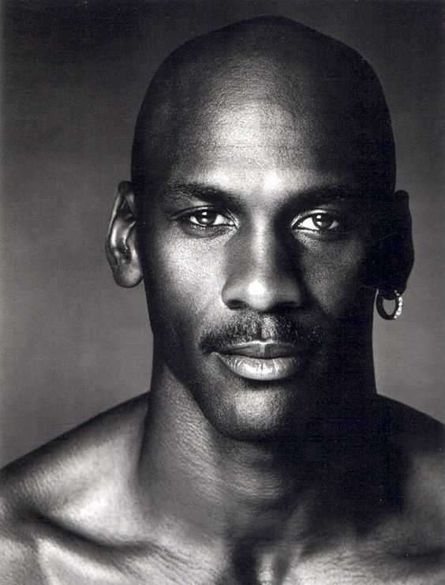
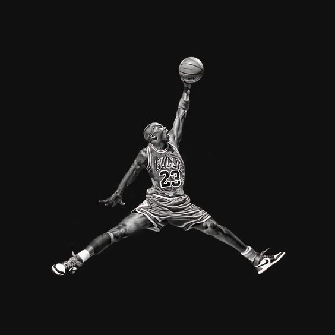
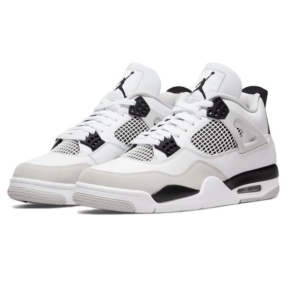

Michael Jeffrey Jordan (Nova Iorque, 17 de fevereiro de 1963) é um empresário e ex-basquetebolista estadunidense que atuava como ala-armador. Considerado por muitos como o melhor jogador de basquete de todos os tempos, é considerado também como um dos mais importantes desportistas masculinos da história.
O logotipo "Jumpman" originou-se de uma sessão de fotos que Michael Jordan fez a revista Life antes de jogar pela equipe Estados Unidos nos Jogos Olímpicos de Verão de 1984, fotografado por Jacobus Rentmeester. Esta sessão de fotos foi tirada antes de Jordan assinar com a Nike em 1985, com Jordan vestindo seu macacão olímpico e New Balances fazendo uma pose idêntica à técnica do balé grand jeté. Moore, responsável pela equipe de design, se deparou com esta edição da revista Life e fez Jordan replicar a pose ao par de tênis da Nike. O logotipo "Jumpman" foi desenvolvido e passou por várias mudanças e pode ser visto em tênis, roupas, chapéus, meias e outras formas de uso, tornando-se um logotipo.
O que é Jordan 4?
O Air Jordan 4, originalmente lançado em 1989, foi o segundo Air Jordan projetado por Tinker Hatfield. O tênis possui rede de malha na língua e nas laterais, bem como abas de plástico nas laterais e, mais uma vez, exibindo o Nike Air no calcanhar.